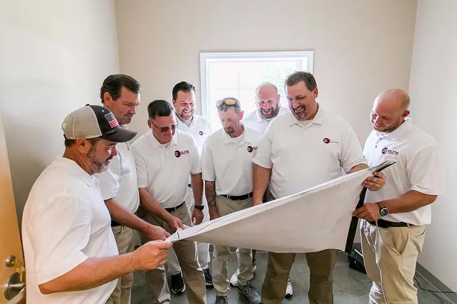
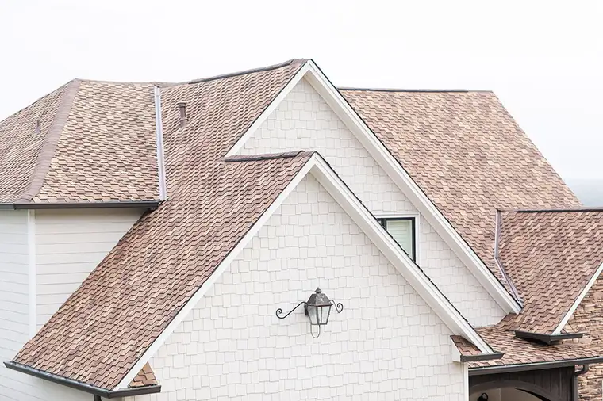
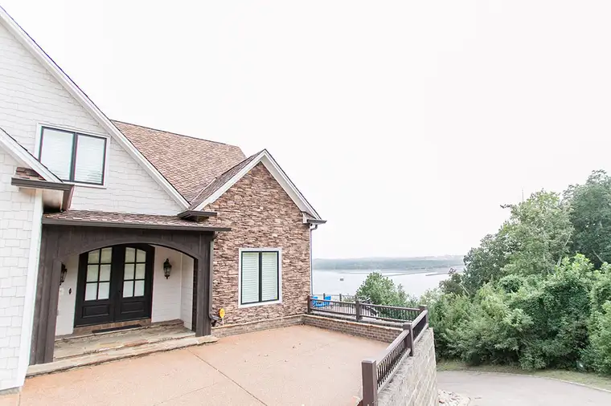
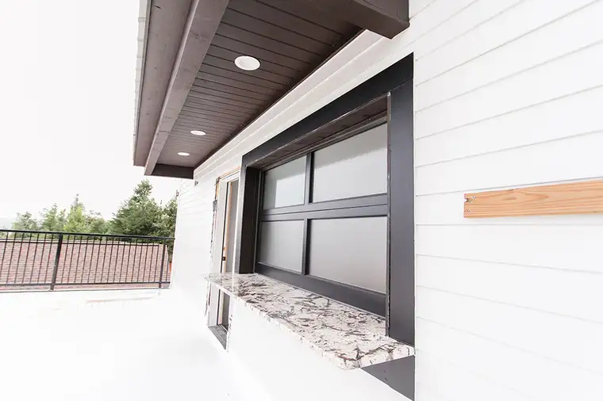
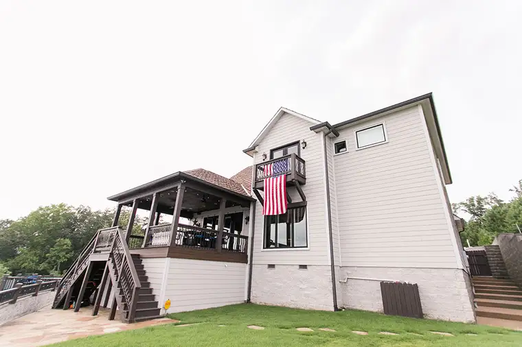
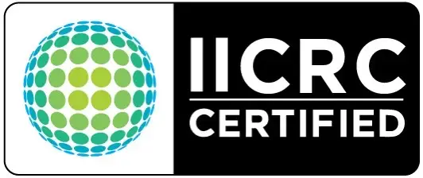

About Us
When it comes to remodeling or repairing your property, you need a construction company with the drive, passion, and expertise to exceed your expectations every step of the way. At Elite Contractors, we provide exceptional customer service, superior craftsmanship, and quality building products to residential and commercial clients in Jackson and throughout Tennessee and the Southeastern United States.
As a Tennessee unlimited licensed, bonded, and insured general contractor, Elite Contractors can serve as a one-stop-shop for your commercial, residential, or insurance restoration project. We are grateful for the opportunity to earn your business now and in the future!
Team Elite
Integrity. Craftsmanship. Commitment.
Repairing, remodeling, or new construction projects can be overwhelming. That’s why you should choose a general contractor who can not only handle it from start to finish, but one who also instills the trust, honesty, and reliability of a good neighbor.
At Elite Contractors, we take pride in helping our client with all of their construction and roofing needs. We won’t just remodel or repair your property﹣we’ll transform it into something better. Team Elite combines over 60 years of experience in all areas of residential and commercial construction.
When your business, commercial property, or home gets damaged, we’ll be there to help you recover, navigate the insurance claims process, and restore your peace of mind. Whether you’ve endured a busted water pipe, hail damage, fire damage, or a natural disaster, Elite Contractors is here to help.
\
Best of Jackson, Construction and Remodeling, 2018, 2019, 2020, 2021, 2022 & 2023
﹣Jackson Awards Program
Carlisle Roofing Product Supplier
VIP Best Roofer & General Contractor 2023
A 2020 Top 100 National Roofing Contractor
Where Quality Products Create Superior Results
We supply only the highest quality products on our jobs because your home or business deserves nothing less. Elite Contractors is proud to purchase building materials from ABC Supply Company and use Atlas roofing products on our job sites.
Call us today at 731-300-3510 or send us a message!
Volunteer Work
Elite Contractors is not only committed to providing excellent customer service; we’re dedicated to building stronger and better communities throughout Tennessee and the Southeast US.
In addition to providing construction, roofing, and interior remodeling services, we also support the following organizations in Jackson, TN, and beyond. Team Elite looks forward to future projects and the opportunity to do business with you.
Community Involvement
If you’d like to learn more about these organizations and get involved, reach out to us or visit their websites by clicking the logos below.
List of Charitable Organizations
Journey Kids
Elite Contractors completed a ground-up construction project for Journey Church in Three Way, TN.
Helping Hands of Humboldt
Helping Hands of Humboldt is a local food pantry, community kitchen, and resale shop in Humboldt, TN.
Scarlet Rope Project
The Scarlet Rope Project is a faith-based non-profit organization in Jackson, TN, that works to prevent exploitation and support survivors of sex trafficking.
YouthTown
YouthTown is a faith-based organization in Jackson, TN, designed to help troubled youth who are experiencing problems with substance abuse, assault, theft, truancy, or the home environment.
Redemption Road Rescue
Redemption Road Rescue is a non-profit organization dedicated to rescuing, rehabilitating, and finding new happy homes for the horses in our community.
731 Crime Stoppers
Crime Stoppers of Jackson & Madison County work together with citizens and local law enforcement to fight against crime and make our community a safer place for all.
Journey Kids
Elite Contractors completed a ground-up construction project for Journey Church in Three Way, TN. We are proud to support their school and nursing program, Journey Kids!
Scarlet Rope Project
The Scarlet Rope Project is a faith-based non-profit organization in Jackson, TN, that works to prevent exploitation and support survivors of sex trafficking.
Helping Hands of Humboldt
Helping Hands of Humboldt is a local food pantry, community kitchen, and resale shop in Humboldt, TN.
YouthTown
YouthTown is a faith-based organization in Jackson, TN, designed to help troubled youth who are experiencing problems with substance abuse, assault, theft, truancy, or the home environment.
Journey Church Gallery
Journey Church Gallery
Chester County Ambulance Center Gallery
Chester County Ambulance Center Gallery
For more information, reach out to us today!
Our Services
View Our Work
Elite Contractors
Mailing Address
319 Vann Drive E9
Jackson, TN 38305
Jackson Office
110 Directors Row
Jackson, TN 38305
Phone:
731-300-3510
Get directions
Fax:
877-373-1944
Email: Info@elitecontractorsus.com
Business Hours
24/7
Office Hours
Monday - Saturday:
8:00 AM - 5:00 PM
Sunday: Closed
Jackson
write us a review
read our reviews
Follow
Home
About Us
Roofing
Commercial Renovation
Insurance Mitigation & Restoration
Testimonials
Gallery
Financing & FAQ
Contact Us
Site Map
© 2021 - 2026 Internet Marketing and SEO by NEXT Digital
Project photos





